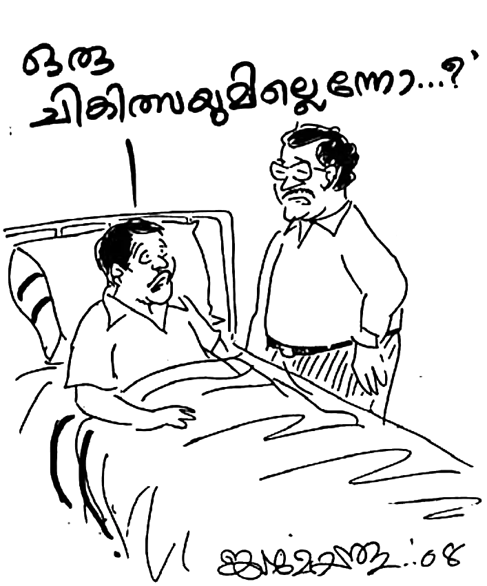

മോഹനൻ നായരുടെ അനുഭവസാക്ഷ്യം
ശാശ്വതഭുജങ്ങളിൽ
പ്രസാധകൻ
മോഹൻ നായർ
കാരുണ്യാഭവൻ, കൈതച്ചാൽ, മാങ്ങാട്ടിടം തപാൽ
കണ്ണൂർ
670643, കേരളം
ഫോണ് : 9745568090
SASWATHABHUJANGALIL (Malayalam)
(Biography of Mohanan Nair)
Author & Illustrator: Jaimohan Athirumkal
Copyright © 2024 Mohanan Nair
All rights reserved. No part of this book may be reproduced or used
in any manner without the prior written permission of the copyright owner,
except for the use of brief quotations in a book review.
Publisher: Mohanan Nair
First Print Edition: February 2008
First Digital Edition: December
2024
Website and eBook created by: Philip Eapen
1
മോഹനൻ നായർ ഉത്സാഹത്തോടെ മരം മുറിക്കുകയാണ്. ഇനി അധിക നേരമില്ല ജോലി തീരാൻ. കഠിനാദ്ധ്വാനിയായ ആ യുവാവിനു ജോലിയൊരു ഹരമാണ്. രാപകലില്ലാതെ അദ്ധ്വാനിക്കാൻ ഒരു മടിയുമില്ല.
പെട്ടെന്നാണതു സംഭവിച്ചത്. മുറിച്ചു കൊണ്ടിരുന്ന മരം ദിശ തെറ്റി വീണു. മോഹനൻ നിന്നിരുന്ന സ്ഥലത്തേക്കാണു് മരം വീണത്. മരക്കൊമ്പിന്റെ ശക്തമായ അടിയേറ്റു മോഹനൻ തെറിച്ചു വീണു. അസഹ്യമായ വേദന. അരയ്ക്കു് താഴ് വശം മരവിക്കുന്നതു് പോലെ. മോഹനൻ നിലവിളിച്ചു.
നാട്ടുകാരും, ജോലി ചെയ്തു കൊണ്ടിരുന്ന പുരയിടത്തിന്റെ ഉടമസ്ഥരുമെല്ലാം ഓടി കൂടി മോഹനനെ എടുത്തുയൎത്തി. അരയ്ക്കു് കീഴെ അറ്റുപോയതു പോലെ മോഹനന് അനുഭവപ്പെട്ടു. പെട്ടെന്നു് തന്നെ ഇരിട്ടിയിലുള്ള ഒരു ആശുപത്രിയിൽ മോഹനനെ പ്രവേശിപ്പിച്ചു. അവിടത്തെ ഡോക്ടർ പരിശോധിച്ചിട്ടു് കോഴിക്കോട് മെഡിക്കൽ കോളജിലേക്കു് അയച്ചു. മെഡിക്കൽ കോളജിൽ എത്തിയ മോഹനനു ആവശ്യമായ പരിചരണങ്ങളോ എന്തിനു ശ്രദ്ധ പോലുമോ ലഭിച്ചില്ല. തന്നെ ഡോക്ടർമാർ കാൎയ്യമായി ശ്രദ്ധിക്കാത്തതിൽ മോഹനൻ ദുഃഖിതനായി.
മെഡിക്കൽ കോളജിൽ പ്രവേശിപ്പിച്ചിട്ടു് ഇരുപത്തിരണ്ടു് ദിവസങ്ങളായി. എന്നാൽ ഡോക്ടർമാർ കാൎയ്യമായി ഒരു ചികിത്സയും നിർദ്ദേശിക്കുന്നില്ല എന്നു് കണ്ടപ്പോൾ മോഹനൻ ജ്യേഷ്ഠനെ ഡോക്ടറുടെ വീട്ടിലേക്കയച്ചു. ഡോക്ടർ കാൎയ്യം പറഞ്ഞു: “സുഹൃത്തേ, മോഹനന്റെ സ്പൈനൽ കോഡ് തകൎന്നു പോയിരിക്കുകയാണ്. ആ മനുഷ്യന്റെ മേൽ ഇനി ചികിത്സ കൊണ്ട് ഒന്നും ചെയ്യുവാനില്ല. കലം കമിഴ്ത്തിവച്ചു വെള്ളം ഒഴിക്കുന്നതു് പോലെയാണു് ചികിത്സിക്കുന്നത്. ഒരു പ്രയോജനവും ഇല്ല.”
ഈ വാൎത്ത കേട്ട ജ്യേഷ്ഠൻ വളരെ വേദനയും നിരാശയും നിറഞ്ഞവനായി മോഹനന്റെ കട്ടിലിൽ വന്നിരുന്നു. ജ്യേഷ്ഠൻ നിരാശനായി മൌനമായി ഇരിക്കുന്നതു് കണ്ട മോഹനൻ കാൎയ്യം തിരക്കി. ജ്യേഷ്ഠൻ അതീവ ദുഃഖിതനായി പറഞ്ഞു: “അനിയാ, നീ വിഷമിക്കില്ലെങ്കിൽ പറയാം.” ഡോക്ടർ പറഞ്ഞ കാൎയ്യം ജ്യേഷ്ഠൻ പറഞ്ഞപ്പോഴും മോഹനൻ പ്രത്യാശ കൈവിട്ടില്ല. മറ്റെവിടെ എങ്കിലും നല്ല ഡോക്ടർമാരുള്ള ആശുപത്രിയിൽ തന്നെ കൊണ്ടുപോയാൽ താൻ രക്ഷപ്പെടുമെന്നു് പറഞ്ഞു.
പിന്നെ താമസിച്ചില്ല. മോഹനന്റെ കുടുംബ ഡോക്ടറായ ബാലഗോപാലന്റെ ഉപദേശ്ര പകാരം തൃശൂർ എലീറ്റ് മിഷൻ ആശുപത്രയിലേക്കു് പോകാൻ തീരുമാനിച്ചു. ജോലി ചെയ്തു കിട്ടുന്ന കൂലിയിൽ നിന്നു് മിച്ചം പിടിച്ചു മോഹനൻ ഒരു ചിട്ടിയിൽ (കുറി) നിക്ഷേപിച്ചിരുന്നു. ബാങ്കിൽ നിന്ന് ആ പണം വാങ്ങി; ആയിരത്തി ഇരുനൂറ്റി അമ്പതു രൂപ ഉണ്ടായിരുന്നു. തൃശൂർ വരെ പോകാനുള്ള വണ്ടി കൂലിക്കേ ആ പണം തികയുമായിരുന്നുള്ളൂ. അതായിരുന്നു അതുവരെ ഉള്ള സമ്പാദ്യം.
അമേരിക്കയിൽ ഉപരിപഠനം നടത്തിയ ശേഷം കോഴിക്കോട് മെഡിക്കൽ കോളജിലെ പ്രഫസർ പദവിയിൽ നിന്നു് വിരമിച്ച ഡോ. പി. കെ. സുരേന്ദ്രന്റെ ചികിത്സകൊണ്ടു് ഫല ഉണ്ടായേക്കാം എന്ന ചിന്തയിലാണ് എലീറ്റ് മിഷൻ ആശുപത്രിയിലേക്കു വന്നത്. ഡോ. സുരേന്ദ്രൻ എലീറ്റിൽ പ്രാക്റ്റീസ് ചെയ്തിരുന്നു. എലീറ്റ് ആശുപത്രിയിൽ എത്തിയ മോഹനനെ ശസ്ത്രക്രിയയ്ക്കു വിധേയനാക്കി. ഒടിഞ്ഞു താണിരുന്ന ഒരു കഷണം നട്ടെല്ല് എടുത്തുമാറ്റി. മൂന്നു മാസം മരുന്നും മറ്റുമായി എലീറ്റിൽ കഴിഞ്ഞു. മോഹനനെ സ്നേഹിച്ചിരുന്ന നാട്ടുകാരുടെയും ഭാൎയ്യവീട്ടുകാരുടെയും സഹായത്തിലാണ് ആശുപത്രി ചെലവുകൾ നടന്നു പോയത്. മുപ്പത്തഞ്ചു് വർഷം മുമ്പു് ചെയ്ത ഈ ചികിത്സയ്ക്കായി ഇരുപത്തി അയ്യായിരത്തോളം രൂപ ചെലവായി. പക്ഷേ, മോഹനനു സൗഖ്യമായില്ല. എന്നു് മാത്രമല്ല, പറയത്തക്ക ഒരു വ്യത്യാസവും വന്നില്ല. ഒരു മാസത്തേക്കു് മോഹനനെ ആശുപത്രിയിൽ നിന്നു് വീട്ടിലേക്കയച്ചു.
ആശുപത്രിയിൽ വന്നപ്പോൾ ഡോക്ടർ പറഞ്ഞത് “എങ്ങനെയെങ്കിലും ഇരുത്തിതരാം” എന്നായിരുന്നു. എന്നാൽ ഡിസ്ചാർജിനു മുമ്പു് ഡോക്ടർ മോഹനന്റെ അടുത്തു വന്നു. സ്റ്റാൻഡിന്റെയും മറ്റും സഹായത്താൽ മോഹനനെ എഴുന്നേല്പിച്ചിരുത്തി. മോഹനന്റെ പുറത്തു് തലോടിക്കൊണ്ട് ആ ഡോക്ടർ ആ സത്യം പറഞ്ഞു: “മോഹനാ, ഞാൻ നിന്നോടൊരു കാൎയ്യം പറയട്ടെ. നിന്റെ സുഷുമ്നാ നാഡി (spinal cord) മുറിഞ്ഞു പോയിരിക്കുകയാണ്. വൈദ്യ ശാസ്ത്രത്തിനു ഒന്നും ചെയ്യാൻ കഴിയുകയില്ല.”
ഇടിമുഴക്കം പോലെയാണ് ആ വാക്കുകൾ മോഹനനു അനുഭവപ്പെട്ടത്. ഒരു നിലവിളിയോടെ മോഹനൻ ഡോക്ടറോടു് ചോദിച്ചു: “ഒരു ചികിത്സയുമില്ലെന്നോ?”
മോഹനന്റെ കണ്ണിൽ നിന്നു് കണ്ണുനീരൊഴുകി. അസഹനീയമായ മനോവിഷമം മൂലം മോഹനൻ പൊട്ടിക്കരഞ്ഞു. ഡോക്ടറുടെ മറുപടി കേൾക്കാനുള്ള ശക്തി മോഹനനില്ലായിരുന്നു.
വൈദ്യശാസ്ത്രത്തിനു ഇക്കാര്യത്തിൽ ഒന്നും ചെയ്യാനില്ല. പൊട്ടിപ്പോയ സുഷുമ്നാനാഡിയുടെ മുമ്പിൽ വൈദ്യശാസ്ത്രം പകച്ചു നിൽക്കുകയാണ്. ഡോക്ടർ കരഞ്ഞു കൊണ്ടാണ് ഈ വിവരം മോഹനനോടു് പറഞ്ഞത്. അമേരിക്കയിൽ ഉപരിപഠനം നടത്തിയ ആ ഡോക്ടർ കരയുന്നതു് കണ്ടു് മോഹനൻ അടക്കാനാവാതെ അലറിക്കരഞ്ഞു. “ഈശ്വരൻ നിന്നോടു് കരുണ കാണിക്കട്ടെ”യെന്നു് പറഞ്ഞു ഡോക്ടർ അവിടെ നിന്നു് പോയി.
അപ്പോൾ മുതൽ ആശയറ്റവനായ ആ ചെറുപ്പക്കാരന്റെ കരച്ചിൽ നിന്നിട്ടില്ല, കണ്ണുനീർ തോൎന്നിട്ടില്ല. അദ്ധ്വാനിച്ചു കുടുംബം പുലൎത്തിയിരുന്ന ഇരുപത്തിമൂന്നു വയസ്സു മാത്രം പ്രായമുള്ള ഈ യുവാവു് എട്ടു് മാസങ്ങൾക്കു് മുമ്പു് മാത്രമാണു് വിവാഹിതനായതു്. ആറു് മാസം കൂടി കഴിഞ്ഞാൽ അവൻ ഒരു കുഞ്ഞിന്റെ പിതാവാകും. ആ യുവാവ് ഇത് എങ്ങനെയാണു് സഹിക്കുക? ആൎക്കാണ് അദ്ദേഹത്തെ ആശ്വസിപ്പിക്കാൻ കഴിയുക? ഇനിയാരു സഹായിക്കും, എങ്ങനെ ജീവിക്കും, അരയ്ക്കു് കീഴെ മരിച്ച് ഈ അൎദ്ധപ്രണനായ യുവാവിനെ ആരാണു് പരിചരിക്കുക? ആ വേദന അനുഭവിച്ചെങ്കിൽ മാത്രമേ അറിയുകയുള്ളൂ.
അവസാനത്തെ ഒരു മാസത്തെ ചികിത്സയ്ക്കുള്ള പണം ആശുപത്രി അധികൃതർ വാങ്ങാതെ മോഹനനെ മടക്കി അയച്ചു. ആശുപത്രിയിൽ ഉണ്ടായിരുന്ന ബന്ധു മിത്രാദികൾ ഡോക്ടർമാരോടായി മാറി മാറി ചോദിച്ചു: “മണിപ്പാലിലോ വെല്ലൂരിലോ പോയാൽ എന്തെങ്കിലും പ്രയോജനം ഉണ്ടോ?” ഡോക്ടർമാർ എല്ലാം ഒരേ സ്വരത്തിൽ ഉത്തരം നൽകി: “സുഷുമ്നാ നാഡി യോജിപ്പിക്കാൻ യാതൊരു ചികിത്സയും എവിടെയുമില്ല. വെല്ലൂരിൽ പോയാലും ഇതിന് ഒരു ശതമാനംപോലും വിജയ സാദ്ധ്യതയില്ല.” അങ്ങനെ ആ രംഗവുമവസാനിച്ചു.
മൂന്നു മാസത്തെ എലീറ്റ് ആശുപത്രിയിലെ ചികിത്സയ്ക്കു് ശേഷം വീട്ടിലേക്കു മടങ്ങാനൊരുങ്ങുന്ന മോഹനനെ കാണാൻ ആ ആതുരാലയത്തിലെ നാൽപതോളം നേഴ്സുമാരും വന്നിരുന്നു. അവരുടെ ആശ്വാസ വാക്കുകൾക്കൊന്നും മോഹനനെ ആശ്വസിപ്പിക്കാൻ കഴിഞ്ഞില്ല. ജീവിതം കൊണ്ടു് യാതൊരു ഫലവുമില്ല എന്നുള്ള ചിന്ത മോഹനന്റെ മനസ്സിനെ മഥിച്ചു കൊണ്ടിരുന്നു. നിരാശനായ ആ യുവാവ് നിൎത്താതെ നിലവിളിച്ചു; ആൎക്കും ആശ്വസിപ്പിക്കാൻ കഴിയാതെ ആശുപത്രിയിൽ നിന്നു വീട്ടിലെത്തിയ മോഹനന്റെ ജീവിതം ഇരുൾ മൂടിയതായിരുന്നു.
എത്ര ചിന്തിച്ചിട്ടും ഇത്തിരി വെളിച്ചം എവിടെയുമില്ല. ഉറങ്ങുവാൻ വളരെ ശ്രമിച്ചിട്ടും ചിന്തകൾ ലോകം മുഴുവൻ എന്നപോലെ അലയുവാൻ തുടങ്ങി. ആയിരമായിരം ചിന്തകൾ മനസ്സിൽ കൂടി കടന്നു പോകുന്നു. എന്നാൽ ഒന്നിനും ഉത്തരമില്ല. നിത്യവും കൂലിവേല ചെയ്തു ജീവിച്ചുവന്ന ഒരു യുവാവ്. ജീവിതം തുടങ്ങിയപ്പോൾ തന്നെ ഒടുങ്ങിയ അവസ്ഥ! ജീവിതം ശാശ്വതമായി കട്ടിലിൽ തളയ്ക്കപ്പെട്ട അവസ്ഥ! ദിനചര്യ പോലും പരസഹായം കൂടാതെ ചെയ്യാൻ കഴിയുന്നില്ല. ജീവിതയാത്ര ഇനി ഒരിഞ്ചു് പോലും മുൻപോട്ടു് പോകാൻ വഴിയില്ലാത്ത പോലെ ജീവിതത്തിൽ അന്ധകാരം വ്യാപിച്ചു. ഒരിറ്റു പ്രത്യാശയ്ക്കായി ദൈവങ്ങളോടു് നിലവിളിച്ചു. എന്നാൽ ഫലം ഉണ്ടായില്ല. എന്നു് മാത്രമല്ല, ശാരീരികമായും മാനസികമായും തളൎന്ന് അവശനായി തീൎന്നു ജീവിക്കണം എന്ന ആശ നഷ്ടപ്പെട്ടവനായിത്തീൎന്നു. ഇരുപത്തിനാലു് മണിക്കൂറും ആകുല ചിന്തയാൽ വലഞ്ഞു കൊണ്ടു് ഇരുന്നപ്പോൾ, ഏതോ ഒരു ശക്തി തന്റെ കാതിൽ മന്ത്രിക്കാൻ തുടങ്ങി—ഇനി ജീവിതം അവസാനിപ്പിക്കുക തന്നെ. അതല്ലാതെ മറ്റൊരു പോംവഴിയും തന്റെ മുമ്പിൽ കാണുന്നില്ല. ഈ അന്ധകാര ശക്തിയുടെ പിടിയിൽ അദ്ദേഹം അമൎന്നു കഴിഞ്ഞു. ഉറക്കമില്ലാത്ത രാവുകളായി പിന്നെയുള്ള ദിവസങ്ങൾ. ജീവിതത്തിന്റെ ആൎത്തി ഒരു വശത്തും മരണത്തിന്റെ കരാള ഹസ്തങ്ങൾ മറുവശത്തുമായി ആ യുവാവ് ഞെരിഞ്ഞമൎന്നു തുടങ്ങി.
2
കൂത്തുപറമ്പിനടുത്തുള്ള ചിറ്റാരിപ്പറമ്പെന്ന ഗ്രാമം. അവിടെ കുഞ്ഞിക്കണ്ണൻ-ലക്ഷ്മിയമ്മ എന്നു് പേരായ ദമ്പതിമാർ. അവർ യാഥാസ്ഥിതിക നായർ തറവാട്ടുകാരാണ്. കുഞ്ഞിക്കണ്ണൻ ജന്മനാ ഒരു കൈ മാത്രം ഉള്ള ആളായിരുന്നു. അവരുടെ കുടുംബ ജീവിതത്തിൽ പത്തു് മക്കൾ ജനിച്ചു. അഞ്ച് ആണും അഞ്ചു് പെണ്ണും. മക്കൾക്ക് ആൎക്കും യാതൊരു അംഗവൈകല്യവും ഉണ്ടായിരുന്നില്ല.
ആ കുടുംബത്തിൽ മക്കളിൽ മൂന്നാമനായി മോഹനൻ ജനിച്ചു വളൎന്നു. ജനിച്ചതു ചിറ്റാരിപ്പറമ്പിൽ ആയിരുന്നു. എങ്കിലും, വളൎന്നതു് കൂട്ടുപുഴ എന്ന കേരളത്തിന്റെ അതിൎത്തി ഗ്രാമത്തിലായിരുന്നു. മോഹനന്റെ അച്ഛൻ, വിവാഹം കഴിയുന്നതിനു മുൻപേ തന്നെ, കുടിയേറ്റ ഗ്രാമമായ കൂട്ടുപുഴയിലേക്കു് ചുമടിന്റെ പണിയെടുക്കാൻ പോവുകയും, അക്കാലത്തു കുടിയേറ്റ പ്രദേശമായ അവിടെ താമസം ആരംഭിക്കുകയും ചെയ്തു.
പിതാവ് ഒരു കൈ ഇല്ലാത്തവൻ ആയിരിക്കുകയും, അവൎക്കു് പത്തു് മക്കൾ ഉണ്ടാവുകയും ചെയ്താൽ ആ കുടുംബത്തിന്റെ ദാരിദ്ര്യം എത്ര വലുതായിരിക്കും എന്നു് നമുക്ക് ഊഹിക്കാവുന്നതല്ലേ ഉള്ളൂ. മോഹനന്റെയും ജീവിതത്തിൽ അതു് തന്നെ സംഭവിച്ചു. ഭവനത്തിൽ മുതിൎന്നവൎക്കും കാര്യമായി വിദ്യാഭ്യാസമില്ല. മോഹനനും ആറാം ക്ലാസിൽ തന്റെ പഠനം അവസാനിപ്പിക്കേണ്ടി വന്നു. കാരണം ദാരിദ്ര്യം തന്നെ. പന്ത്രണ്ടാം വയസ്സിൽ ആ ബാലൻ കൂലിവേലയ്ക്കു് പോയി തുടങ്ങി.
ആ കാലഘട്ടങ്ങളിൽ കുടിയേറ്റ മേഖലകളിൽ ധാരാളം കത്തോലിക്കർ കുടിയേറി പാൎത്തിരുന്നു. അവരുടെ ഇടയിൽ തന്നെയായിരുന്നു മോഹനന്റെ കുടുംബവും. ക്രിസ്ത്യാനികൾ എന്ന് അഭിമാനിക്കുന്ന അവരുടെ ഭവനങ്ങളിൽ പന്ത്രണ്ടാം വയസ്സിൽ കൂലി വേലയ്ക്കു് പോയ കാൎയ്യം മോഹനൻ ഇന്നും ഓൎക്കുന്നു. രാവിലെ ഏഴു് മണി മുതൽ വൈകുന്നേരം ഏഴു് മണിവരെ കശുവണ്ടി പെറുക്കുകയായിരുന്നു ജോലി. അതോടു് കൂടെ അവരുടെ വീട്ടിലെ മറ്റു ജോലികളും ചെയ്യണം. പ്രതിഫലം കിട്ടുന്നത് ഒന്നര രൂപ !
ഇങ്ങനെ പന്ത്രണ്ടു് വയസ്സു മുതൽ ചെയ്യാവുന്ന അനേകം ജോലികളും കൗമാര പ്രായക്കാരൻ ചെയ്തു വന്നു. ചുമടു് ചുമന്നും തൂമ്പാപ്പണി ചെയ്തും മരം മുറിച്ചും കയ്യാലയുടെ പണി ചെയ്തും കുടുംബത്തിലെ ദാരിദ്ര്യം അകറ്റാൻ ശ്രമിച്ചു. ഇഷ്ടിക പണിയും കിണറു കുഴിക്കലും കൃഷിപ്പണിയും എല്ലാം സാമർത്ഥ്യത്തോടെ ആ യുവാവ് ചെയ്തു. തന്റെ ഇളയ ഏഴു് പേരുടെ കുടുംബ ഭാരം ആ യുവാവിന്റെ മേൽ ആയിരുന്നു. ഒരു കയ്യില്ലാത്ത കുഞ്ഞിക്കണ്ണനും ചുമടു് ചുമന്നും കല്യാണത്തിനു സദ്യ ഒരുക്കിയും കുടുംബം പോറ്റിപ്പുലൎത്താൻ ആവുന്നതെല്ലാം ചെയ്തു. മിക്കപ്പോഴും കുഞ്ഞുങ്ങൾക്കു് വയറു നിറച്ച് ആഹാരം നൽകാൻ ബുദ്ധിമുട്ടി. പത്തു മക്കൾക്കു് ജന്മം നൽകിയ മാതാവും തോട്ടങ്ങളിൽ പണിക്കു് പോയി.
മോഹനന്റെ കൗമാരത്തിൽ പിതാവു വാത രോഗം ബാധിച്ച് കിടപ്പിലായതിനാൽ എങ്ങനെയും ദാരിദ്ര്യത്തിൽ നിന്നു് കരകയറാൻ മോഹനൻ രാവും പകലും പണിയെടുത്തു. പകൽ സാധാരണ പണികൾ ചെയ്യും. രാത്രി ഓവർടൈം പണി ചെയ്യും. ആ ദേശത്തു ക്രിസ്ത്യാനികളെന്നു് വിളിക്കപ്പെടുന്നവർ ധാരാളം ഉണ്ടായിരുന്നു. എങ്കിലും അവരിൽ ദൈവീക സ്വഭാവം കാണുവാൻ മോഹനനു കഴിഞ്ഞിരുന്നില്ല. കാരണം അവരും മറ്റുള്ളവരെ പോലെ ദുശ്ശീലങ്ങളും പകയും വെറുപ്പും സ്വാർത്ഥതയും മദ്യപാനവും മറ്റും തിങ്ങിയവർ ആയിരുന്നു.
മാത്രമല്ല, മാതാപിതാക്കളുമായി എപ്പോഴും ക്രിസ്ത്യാനികൾ (മലബാറിൽ അവർ ചേട്ടന്മാർ എന്നു് അറിയപ്പെടുന്നു) വഴക്കു് കൂടിയിരുന്നു. പലപ്പോഴും അതു് സംഘട്ടനത്തിൽ കലാശിച്ചു. അതിന്റെ ഫലമായ മാനസിക പകയും വിദ്വേഷവും കണ്ടു വളൎന്ന മോഹനന് ക്രിസ്ത്യാനിത്വം എന്നതു് മറക്കുവാൻ കഴിയാത്ത മുറിവുകളാണു് ഹൃദയത്തിൽ സ്രഷ്ടിച്ചത്. ആകയാൽ കുടുംബത്തിൽ നിന്നു് പാരമ്പര്യമായി കിട്ടിയ വെറുപ്പോടെയാണു് പലപ്പോഴും ക്രിസ്ത്യാനികളെ നോക്കിക്കണ്ടിരുന്നത്.
അതുകൂടാതെ കുടുംബത്തിൽ ദാരിദ്ര്യം കൊടുമ്പിരി കൊണ്ടിരിക്കെ ചാരായം വാറ്റി വിറ്റിരുന്നു. മദ്യം വിൽക്കുന്ന ഭവനം എത്ര ആഭാസകരമായിരിക്കും എന്നു് ബാലനായ മോഹനൻ അനുഭവിച്ചറിഞ്ഞു. പോരാത്തതിനു എക്സൈസുകാർ വ്യാജ മദ്യം റെയ്ഡ് ചെയ്തു. തുടൎന്നുള്ള പോലീസ് നടപടികളും കേസും കൂനിന്മേൽ കുരു എന്ന പോലെ മോഹനന്റെ ഭവനത്തെ അസമാധാനത്തിൽ ആഴ്ത്തി. ഒരിറ്റു സമാധാനം ഇല്ലാതിരുന്ന ആ ബാല്യകാല നാളുകൾ ഭീതിയോടെ മാത്രമേ മോഹനന് ഓൎക്കാൻ കഴിയുന്നുള്ളൂ.
പതിമൂന്നാം വയസ്സിൽ മോഹനൻ മറ്റൊരു ക്രിസ്ത്യാനിയുടെ വീട്ടിൽ പണിക്കു പോയിരുന്നു. ആഴ്ചയിൽ ഒരിക്കലേ വീട്ടിൽ വരികയുള്ളൂ. ഏഴു് ദിവസം കഷ്ടപ്പെട്ടു് പണി കഴിഞ്ഞു് വീട്ടിൽ വരുമ്പോൾ സ്വന്ത പിതാവിനെ കാണാനില്ല. അച്ഛനെ വ്യാജവാറ്റിന്റെ പേരിൽ എക്സൈസുകാർ പിടിച്ചു കൊണ്ടു പോയിരിക്കുന്നു. മക്കൾക്കു് ഒരു നേരമെങ്കിലും ആഹാരം നൽകാൻ ആ പിതാവ് കണ്ടെത്തിയ കുറുക്കു് മാർഗ്ഗം പിതാവിനെ ജയിലിൽ ആക്കിയിരിക്കുന്നു.
ഒന്നര രൂപയ്ക്കു് പണിയെടുക്കുന്ന മോഹനൻ ഒരാഴ്ചയിലെ കൂലിയായ പത്തു രൂപയുമായി സന്തോഷത്തോടെ വീട്ടിലേക്കു് വന്നപ്പോൾ മാതാവും ഇളയ സഹോദരങ്ങളും കരഞ്ഞു കലങ്ങിയ കണ്ണുമായി വാടി തളൎന്നിരിക്കുന്ന കാഴ്ചയാണു് കണ്ടത്. അത് ആ പതിമൂന്നു വയസ്സുകാരന്റെ ഹൃദയത്തിനു താങ്ങാൻ കഴിയുന്നതിൽ അപ്പുറമായിരുന്നു.
അന്നു മോഹനൻ തീരുമാനിച്ചു, ഇനി ഈ ഭവനം ഒരു വ്യാജ വാറ്റു നടത്തുന്ന ഭവനമായിരിക്കരുത്. ഈ തീരുമാനത്തോടെ മോഹനൻ ഒരു കോടാലി കൊണ്ട് മദ്യം വാറ്റാൻ ഉപയോഗിക്കുന്ന പാത്രങ്ങളും ചട്ടിയും അടുപ്പും എല്ലാം അടിച്ചു തകൎത്തു കളഞ്ഞു. അന്നു മുതൽ ഒരു കൗമാര പ്രായക്കാരന്റെ ഇച്ഛാശക്തിക്കു് മുമ്പിൽ ആ കുടുംബം കീഴടങ്ങി. അതിനു ശേഷം ഇന്നേവരെ മോഹനന്റെ കുടുംബത്തിൽ കള്ളവാറ്റ് ഉണ്ടായിട്ടില്ല. എന്നു് മാത്രമല്ല, തന്റെ വളരെ ചെറിയ പ്രായത്തിൽ തന്നെ മദ്യത്തോടുള്ള വെറുപ്പു് കൂടുകയും അതു് മനുഷ്യനും വ്യക്തികൾക്കും കുടുംബങ്ങൾക്കും അനർത്ഥമല്ലാതെ മറ്റൊന്നും നൽകുകയില്ലെന്നു് മനസ്സിലാക്കിയതിനാൽ മദ്യപാനം എന്ന ദുശ്ശീലത്തിൽ നിന്നും മോഹനൻ മോചിതനായിരുന്നു. കൂടാതെ, മദ്യവർജ്ജനത്തിനായി താൻ കൂട്ടുകാരോടും മറ്റും സംസാരിക്കുമായിരുന്നു.
തുടൎന്നു് വായിക്കുവാന്നായി താഴെ കൊടുത്തിരിക്കുന്ന ഏതെങ്കിലും ഒരു പുസ്തകശാലയിൽ നിന്നു് ഇലക്ട്രോണിക് രൂപത്തിലുള്ള ഈ പുസ്തകം വാങ്ങുക.
ഗൂഗിൾ പ്ലേ ബുക്സ് വെബ്സൈറ്റിൽ നിന്നു . ഇതിന്നായി ഗൂഗിൾ അക്കൗണ്ട് ആവശ്യമാണു്.
ആമസോണിൽ നിന്നു ഇതിന്നായി ആമസോണ് അക്കൗണ്ട് ആവശ്യമാണു്. വാങ്ങിയ പുസ്തകം രണ്ടു് രീതിയിൽ വായിക്കാം.
സംഭാവനകൾ അയയ്ക്കേണ്ട വിലാസം:
മോഹൻ നായർ
കാരുണ്യാഭവൻ, കൈതച്ചാൽ,
മാങ്ങാട്ടിടം
തപാൽ, കണ്ണൂർ 670643,
കേരളം
ഫോണ് : 9745568090
Karunya Charitable Trust For The Disabled
Karunya Bhavan, Kaithachal,
Mangattidom PO, Kannur 670643
Kerala, India
സംഭാവനകൾ ബാങ്കിലേക്കു അയയ്ക്കുവാൻ:
Karunya Charitable Trust For The Disabled
അക്കൗണ്ട് നമ്പർ:
39040373512
IFSC
കോഡ്:
SBIN0002228
State Bank of India, Kuthuparambu Branch
Kannur District, Kerala,
India